Analysis of neural sequences within and across sniffs
Contents
Let's give a look at the responses.
Let's start from the experiment 08-17-15/d3800 in anterior piriform cortex.

All right, unit 5 on shank 1. Odor: TMT 1:10000
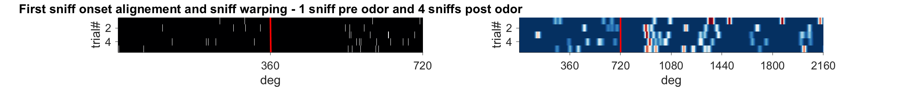 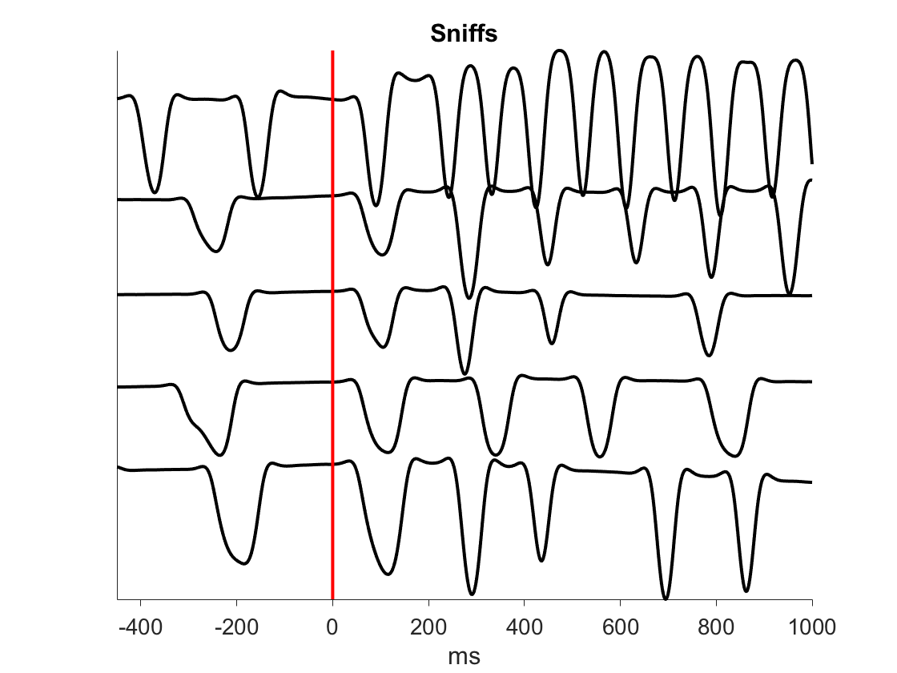Same unit. Odor: isobutylacetate 1:10000
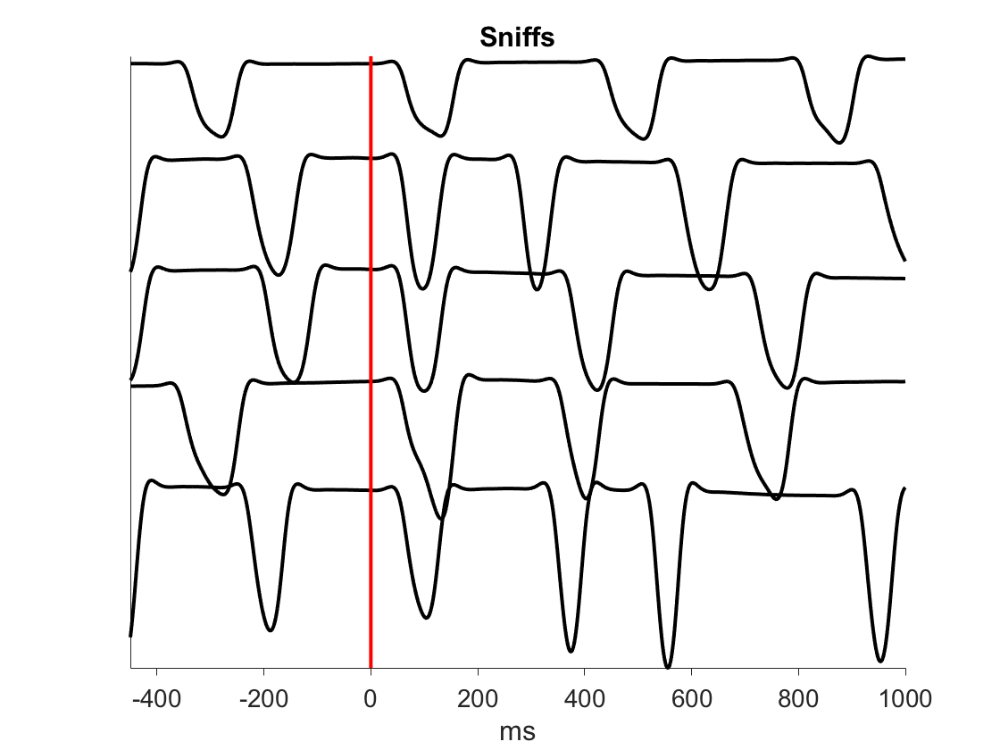Let's switch unit. Shank 3, unit 3. Odor: 5-methylthiazol 1:10000
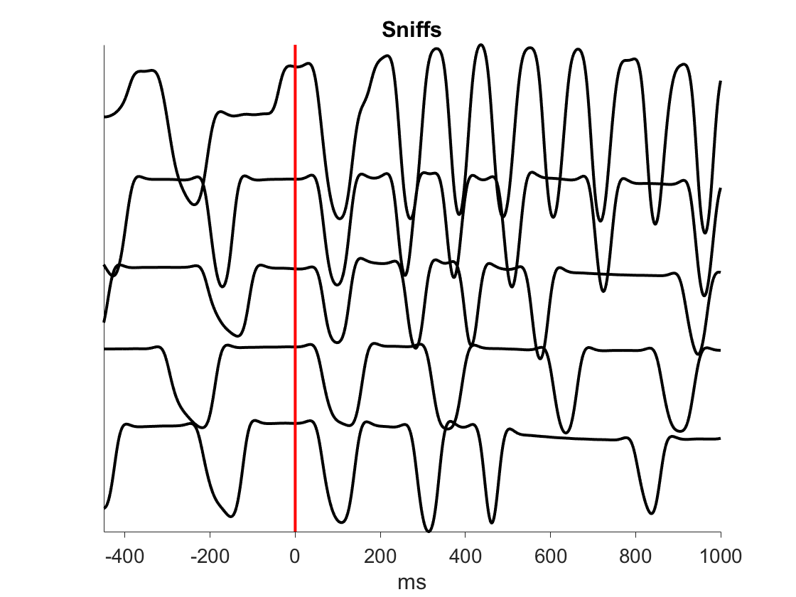Shank 3, unit 3. Odor: 5-methylthiazol 1:10000

It's clear that breath-warping makes the onset of the first breath response sharper and unveils responses during the following sniffs. However, the spikes get diluted when the mouse sniffs (usually at the first trial). Sniffing increases the spike density in time coordinates. For PSTHs (smoothed with a gaussian window of 10 deg) I use phase coordinates on the x axis, but Hz on the y axis. I normalize by the duration of each specific inhalation and exhalation. But again, this actually fixes the problem within a sniff, but not across sniffs. There is an important thing to consider here. Let's imagine there is a mouse that breaths at 2 Hz and one of its neurons emits a spike at each breath. Then, we present an odor and the mouse starts sniffing at 10 Hz. This would result in a response even if the synaptic input hasn't changed. Weird! Well, if this neurons is actually modulated by the olfactory input as well, then the mouse must know how fast he's breathing to disambiguate it. On the other hand, I think that the circuit operates on a timescale of tens of milliseconds rather than hundreds, therefore the higher precision provided by the breath-warping procedure may be more appropriate. Let's give a look at these breath-clock neurons. Here, there are two from shank 1 and shank 4.
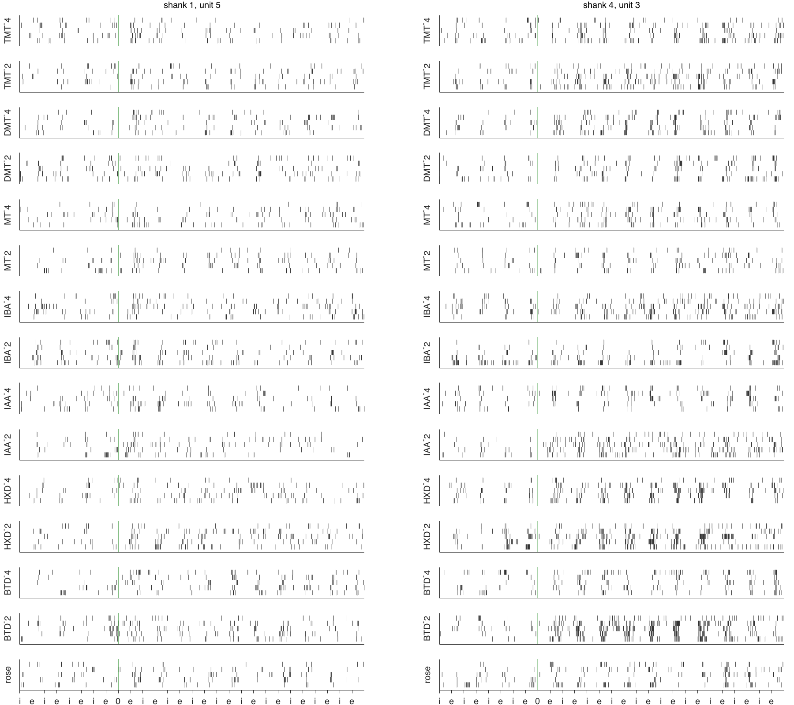Clearly, these two neurons encode breathing and odor identity/concentration
Coherence and cross-correlation between neurons
Let's look at sequential activations of pairs of units by odors. We can use a cross-correlogram. Since, the previous comparison between the responses of two units showed that each unit respond to a given odor at a preffered breath cycle, I will clculate the cross-correlations in the first 4 cycles. Bin width: 5 deg.
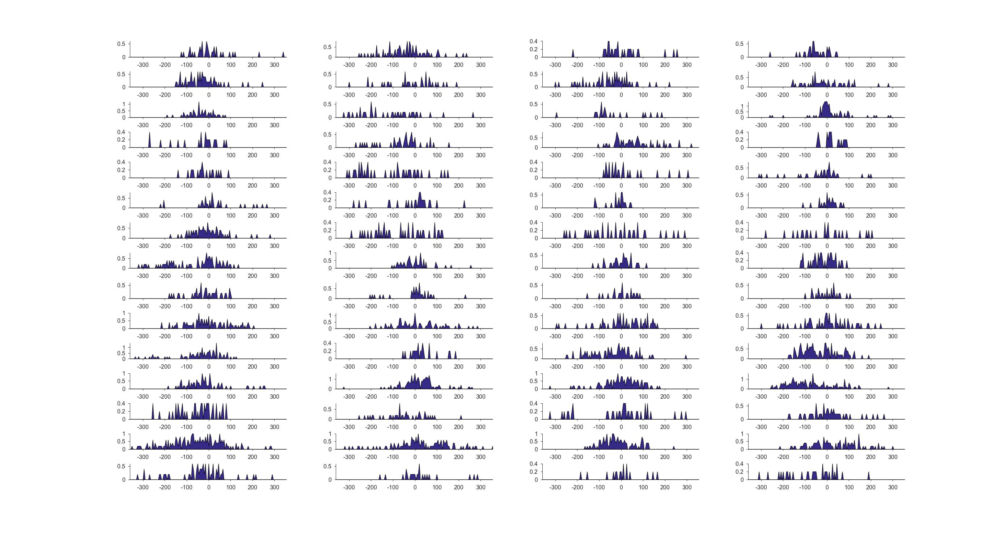So, these two units are quite in phase when they are not excited by an odor. Perhaps, unit 1 slightly precedes unit 2. However, everytime that a unit responds, its spikes
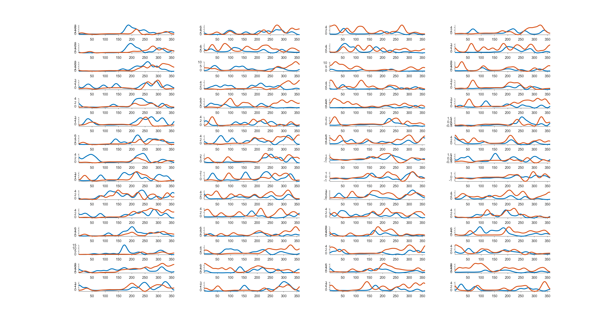Let's see what happen between the second unit from the previous plot and a different unit on shank3 (unit 3).
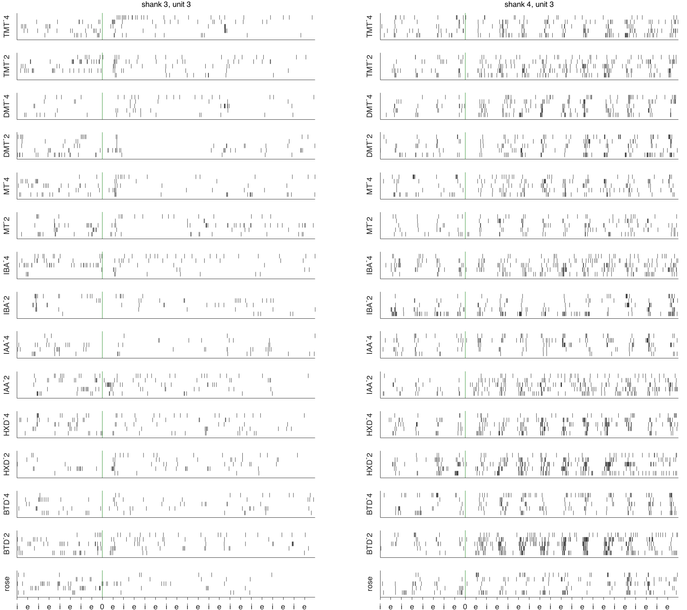And cross-correlations for each breath cycle
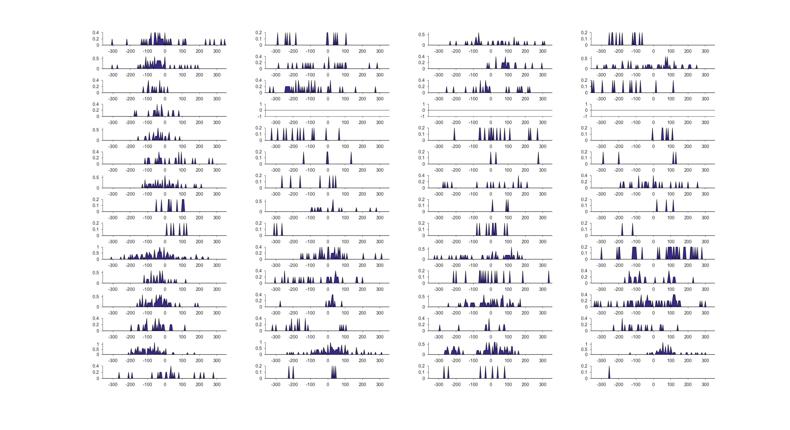
Let's see what happen between the first unit from the first plot and unit 3 on shank3.
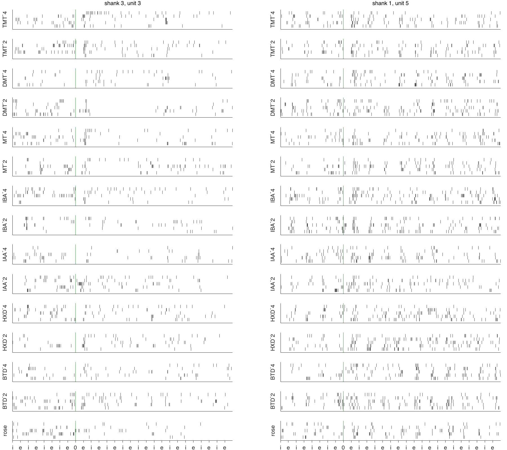And cross-correlations for each breath cycle
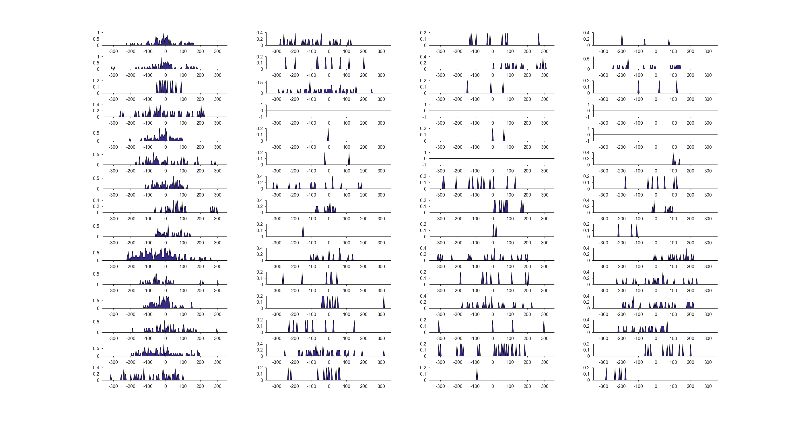 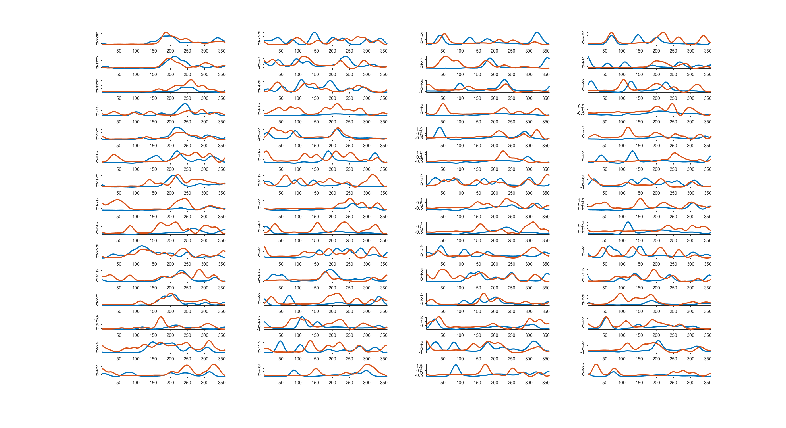